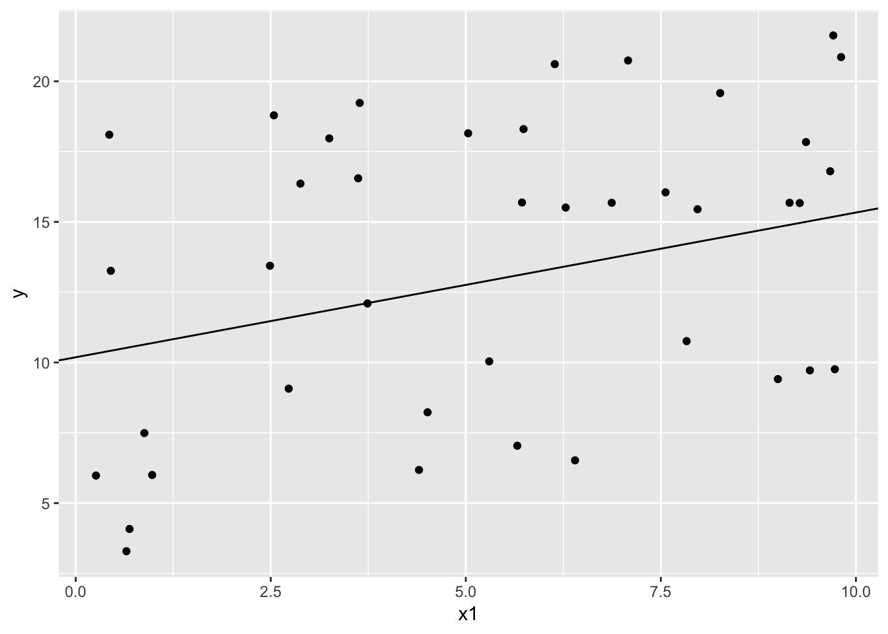
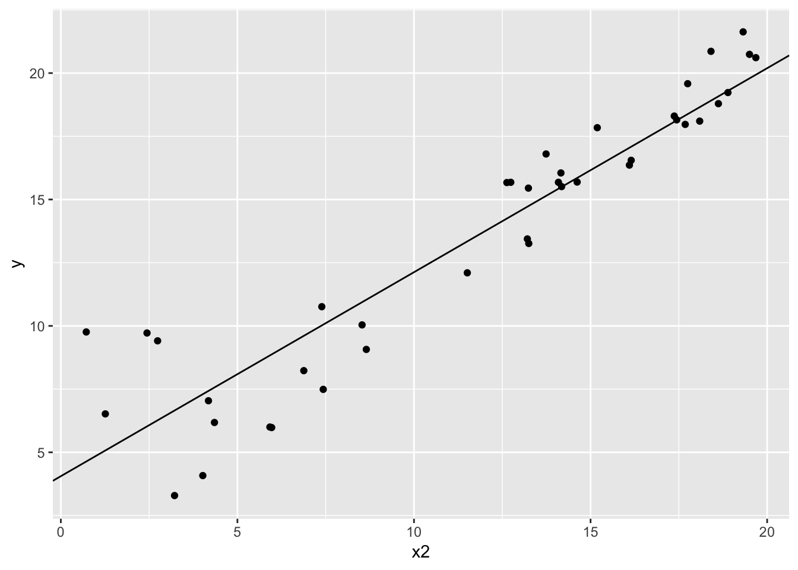

The folder pyth contains outcome \(y\) nad inputs \(x_1,x_2\) for 40 data points, with a further 20 points with the inputs but no observed outcome. Save the file to your working directory and read it into R using the read.table() function.
pyth <- read.table("ARM_data/pyth",header=TRUE)Use R to fit a linear regression model predicting \(y\) from \(x_1,x_2\) using the first 40 data points in the file. Summarize the inferences and check the fit of your model.
library(arm)
fit <- lm(y ~ x1 + x2, data = pyth, subset = 1:40)
display(fit)## lm(formula = y ~ x1 + x2, data = pyth, subset = 1:40)
## coef.est coef.se
## (Intercept) 1.32 0.39
## x1 0.51 0.05
## x2 0.81 0.02
## ---
## n = 40, k = 3
## residual sd = 0.90, R-Squared = 0.97Both x1 and x2 are are statistically significant, and we can interpret these coefficients to mean that a difference of 1 in \(x_1\) between units with the same value of \(x_2\) would lead to a difference between the groups in average y of .5. A difference of 1 in \(x_2\) between units with the same value of \(x_1\) would lead to a difference between the groups in average y of .8. The fit of the model is excellent, with 97% of the variance in the model explained by the predictors.
Display the estimated model graphically as in Figure 3.2
library(ggplot2)
#Plot of y against x1 with x2 held at its average
ggplot(data = pyth[0:40,], aes(x=x1,y=y)) + geom_point() + geom_abline(intercept=coef(fit)[1] + coef(fit)[3]*mean(pyth$x2),slope=coef(fit)[2])
#Plot of x2 against y with x1 held at its average
ggplot(data = pyth[0:40,], aes(x=x2,y=y)) + geom_point() + geom_abline(intercept=coef(fit)[1] + coef(fit)[2]*mean(pyth$x1),slope=coef(fit)[3]) Since we have two continuous variables here instead of a continuous variable and a categorical as in figure 3.2, (and I don’t think the point of this exercise is 3d graphing), I’ve created two plots of the outcome against both predictors, with the estimate lines in each calculated holding the other to it’s average value.